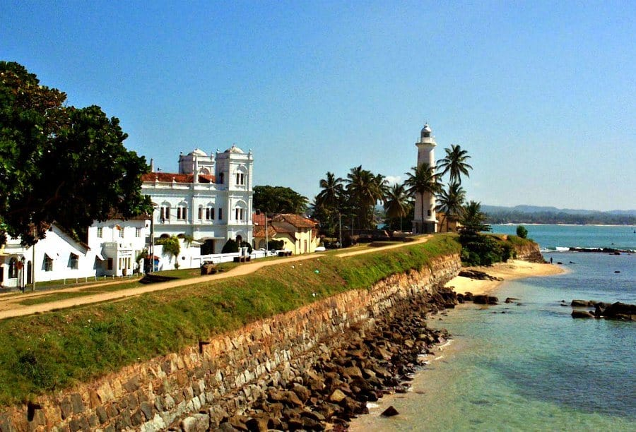
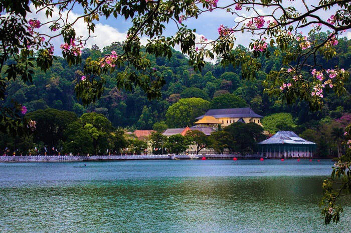
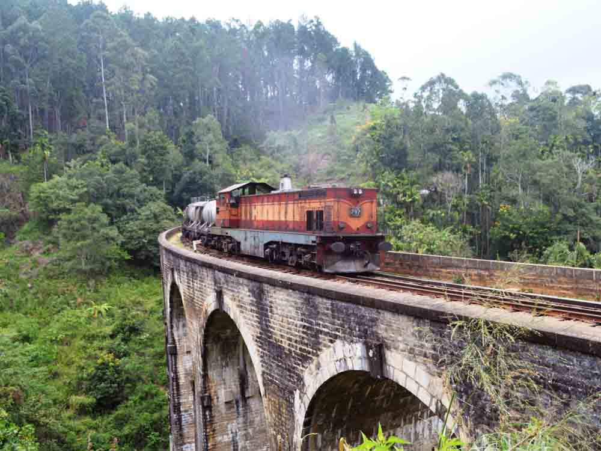
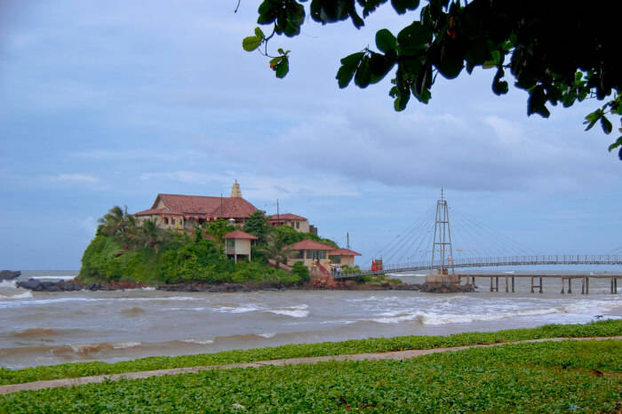
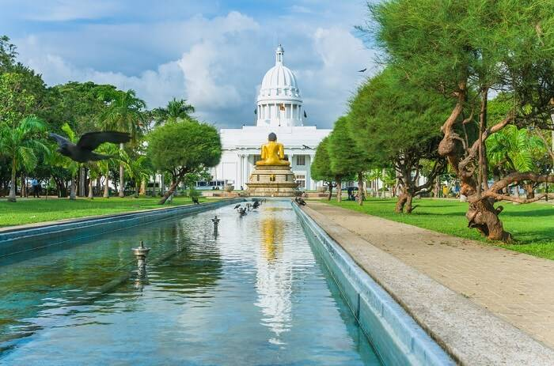

Passenger Experiences
Galle
A picturesque city in the southwest coast of Sri Lanka, Galle is a gem in this island country.
Most famous for the Galle Fort, a spectacular structure built by the Dutch in the 16th century, Galle is
now a UNESCO World Heritage Site. Located just 119 kms away from Colombo, Galle is easily accessible from
major parts of the city. The geographical location, unique architectural style and a host of quirky shops
& restaurants make Galle an idyllic getaway, especially during the monsoon. Therefore, take a trip to Galle
in August and explore its untarnished beauty at length. If you are willing to visit Galle by train, hurry up
and reserve your tickets using this site. Your direct destination is Galle.
For get details about trains, destinations, prices and many more please visit our reservation details.
"SL Trainline" will make your journey
more confortable.
Kandy
Sri Lanka – the island nation in South Asia – is indeed a pearl of joy shining brightly
in the heart of Indian Ocean. The lazy charm clinging on to the hills and floating by the gushing waves
makes Sri Lanka a perfect destination to venture, explore, and contemplate. Snuggled between the imposing
mountains and verdant peaks are some of the best places to visit in Kandy that are defined by calmness and
serenity.
Known for spirituality and laid-back charm, Kandy has everything peaceful and balmy about it.
The beautiful Sri Lankan city is also a popular attraction for the Buddhists. There are quite a few temples,
meditation centers with dense nature around, and exciting trails. Go around and discover eternal comfort as
you plan a much-awaited trip to Sri Lanka.If you are willing to visit Kandy by train, hurry up
and reserve your tickets using this site. Your direct destination is Kandy. For get details about trains,
destinations, prices and many more please visit our reservation details.
"SL Trainline" will make your journey more confortable.
Ella
Are you yearning to be surrounded by nature? Then Ella in Sri Lanka is the perfect place
for you to visit. Even though Ella is a small hill station, you will never get bored. Waterfalls, caves,
or picturesque landscapes, Ella has it all. Ella has something for both nature enthusiasts and
sybarites – those who love to be pampered. Here are some things to do in Ella, Sri Lanka
has in store for you.What makes Ella an irresistible location is that it can be visited year-round,
but the best time to visit during the summer is between March and June and in Winter from December
to February. Ella faces a low season during the Monsoons due to the travel restrictions put in place
during a heavy downpour.
If you are willing to visit Ella by train, hurry up
and reserve your tickets using this site. Your direct destination is Ella. For get details about trains,
destinations, prices and many more please visit our reservation details.
"SL Trainline" will make your journey more confortable.
Matara
Matara is a busy town booming with commercial activities.
Situated 160 kilometers from the Sri Lankan capital of Colombo, the coastal town may not feature highly
on the lists of tourists. The high rise buildings housing some of the leading multinational companies
may not seem like an attractive tourist landmark in Matara. However, that does not mean that Matara
holds next to negligible tourist value. The Nilwala River cuts through the city of Matara forming
stunning views along its path. The river falls into the Indian Ocean at Totamuna. Additionally,
the beachfront paints beautiful scenes along the coast of the city.
If you are willing to visit Matara by train, hurry up
and reserve your tickets using this site. Your direct destination is Matara. For get details about trains,
destinations, prices and many more please visit our reservation details.
"SL Trainline" will make your journey more confortable.
Jaffna

Jaffna is one of the most beautiful towns located right on the northern tip of
Sri Lanka. Jaffna is known for its predominant Tamil population and recognized as the cultural capital
for Tamilians in Sri Lanka. The hospitality of the locals will surely impress any tourist to this place.
They are just not wonderful people but are friendly too. If you are looking for a destination which offers
beauty and great hospitality to travelers then Jaffna should be in your travel plan.
The transportation system of this town is excellent which makes it easy for travelers to communicate in and
around for sightseeing and shopping. There are many places to explore in this location.
If you are willing to visit Jaffna by train, hurry up
and reserve your tickets using this site. Your direct destination is Jaffna. For get details about trains,
destinations, prices and many more please visit our reservation details.
"SL Trainline" will make your journey more confortable.
Colombo
Sri Lanka is filled with amazing places to visit that exhibit true beauty
and offer extraordinary experiences. There are many places in Sri Lanka that make it a place
you would want to visit again and again. Colombo is one of the best places to visit in the
country. From beaches and parks to heritage buildings and museums, it offers a wide range
of great places that you must add to your list if you are planning to visit. If you are
done with all of them and want some more fun on your trip, then there are many places to
visit near Colombo Railway station. These places will not only help you have an
extraordinary experience but also let you witness the city’s culture like never before.
If you are willing to visit Colombo by train, hurry up
and reserve your tickets using this site. Your direct destination is Colombo fort. For get details about trains,
destinations, prices and many more please visit our reservation details.
"SL Trainline" will make your journey more confortable.